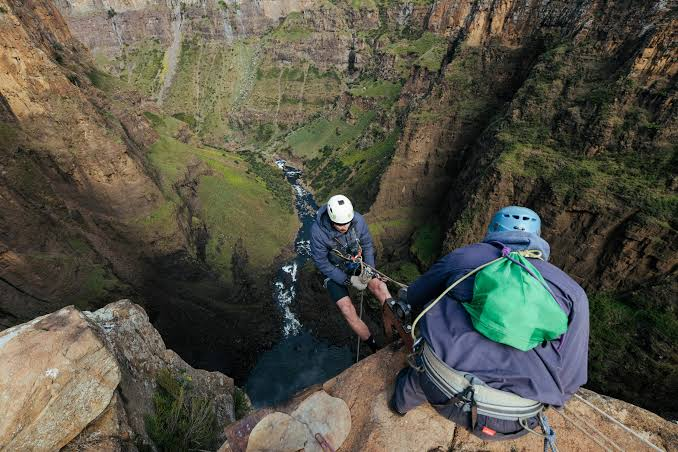
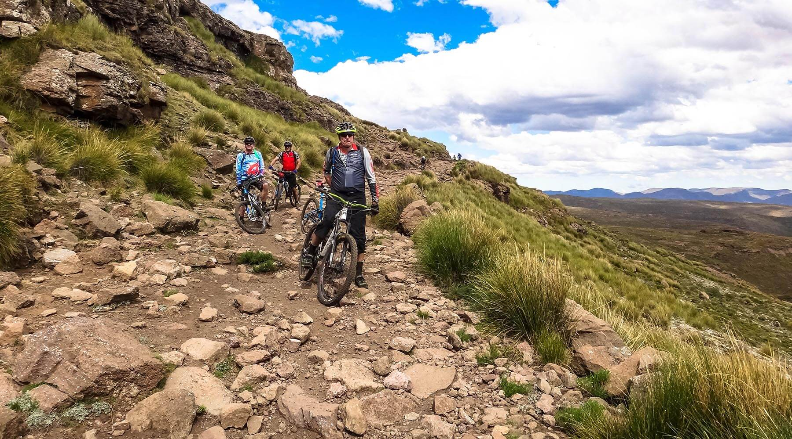
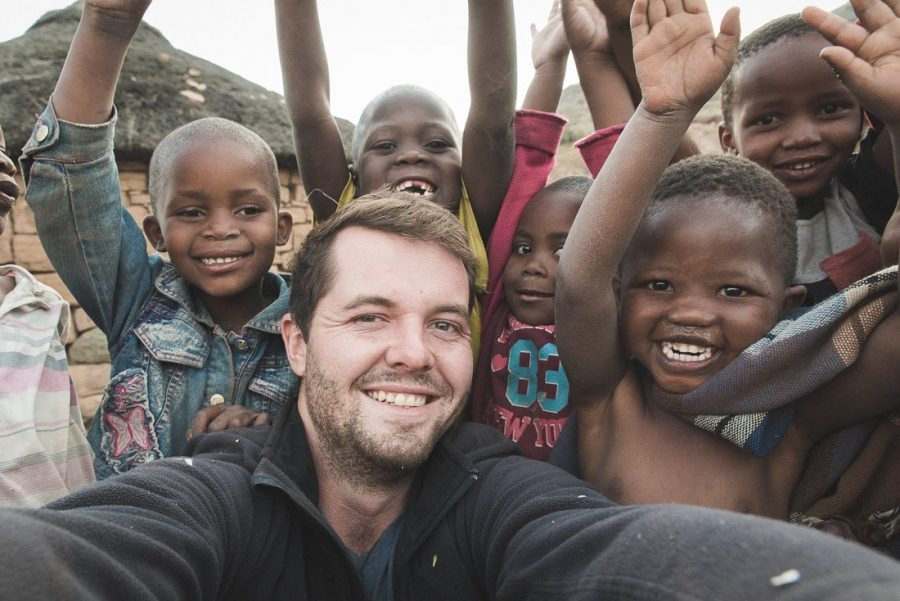

Abseiling at Maletsunyane Falls
Descend the 192-metre Maletsunyane Falls near Semonkong — one of the longest commercially operated abseils in the world. Suitability and availability should be confirmed with the operator.
EnquireThings to Do
Adventure, culture, and nature — discover the experiences that make Lesotho unforgettable.
The Mountain Playground
Whether you're chasing adrenaline or seeking cultural connection, the mountain kingdom offers a wealth of experiences. Difficulty and duration information is provided where verified — always confirm details with local operators before booking.
Category
Lesotho's steep terrain and high altitude make it one of Southern Africa's most rewarding adventure destinations.

Descend the 192-metre Maletsunyane Falls near Semonkong — one of the longest commercially operated abseils in the world. Suitability and availability should be confirmed with the operator.
Enquire
Climb over 1,300 metres through the Drakensberg escarpment on a guided 4x4 tour. The pass reaches the highest pub in Africa at the summit.
Enquire
Trails around Afriski and the Maluti highlands offer challenging rides through dramatic scenery. A range of routes suits different skill levels.
Enquire
Traditional Adventure
The Basotho pony is legendary — a sturdy, sure-footed breed perfectly adapted to Lesotho's rugged terrain. Pony trekking is one of the most authentic ways to explore the mountain kingdom, following traditional routes between remote villages.
Local guides share stories of the landscape, point out medicinal plants, and introduce travellers to village life. Treks range from a few hours to multi-day expeditions, with overnight stays in traditional rondavels.
Enquire About Pony Trekking
On Foot
Lesotho is a hiker's paradise. Trails wind through high plateaus, past waterfalls, and up to summits that offer views stretching across the Drakensberg and the Free State.
The country's highest peak, Thabana Ntlenyana (3,482 m), is a challenging multi-day trek. More accessible routes are found in Ts'ehlanyane National Park, around Katse Dam, and near Semonkong. Local guides are strongly recommended for all but the most well-trodden paths.
Enquire About Hiking
Winter Adventure
Afriski Mountain Resort, at 3,222 metres in the Maluti Mountains, is one of only two ski resorts in Southern Africa. During the winter months (typically June to August), visitors can ski, snowboard, and enjoy snow-based activities.
Lessons are available for beginners, and the resort offers equipment hire. In summer, the resort becomes a base for hiking and mountain biking. Always check current snow conditions and operating schedules before travelling.
Enquire About SkiingCategory
The Basotho people welcome visitors with warmth and pride. These experiences offer a genuine connection to the culture behind the landscape.

Spend time in a mountain village, learn about daily life, and share a meal with local families. Arrange visits through reputable local guides.
Enquire
Explore Lesotho's oldest mission town, the Morija Museum & Archives, and the historic church where the nation's literary heritage was born.
Enquire
Visit the sacred mountain fortress where King Moshoeshoe I united the Basotho nation. Local guides share the history and legends of the site.
EnquireCategory
Lesotho's alpine ecosystems shelter rare species and breathtaking scenery.

Lesotho's oldest protected area and a UNESCO World Heritage Site. Home to the rare bearded vulture, rock art, and dramatic sandstone formations.
Enquire
Lesotho's largest national park protects rare indigenous woodland and crystal-clear streams. Hiking trails range from easy walks to full-day routes.
EnquireCategory
From the golden light of dawn on the Maluti Mountains to the drama of Sani Pass, Lesotho is a photographer's dream.

Lesotho's photographic highlights include:
Always respect local customs and ask permission before photographing people or villages.
View GalleryTell us what kind of experience you're looking for — we'll help you plan an unforgettable trip.